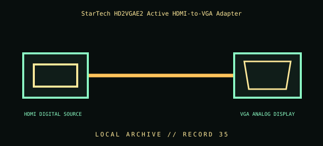

[ INDIVIDUAL COMPONENT // CABLES & ADAPTERS ]
StarTech HD2VGAE2 Active HDMI-to-VGA Adapter
StarTech.com HD2VGAE2 active HDMI source to VGA display converter. This entry identifies the documented model and does not claim that visually similar products share its pinout, protocol, capability, or host compatibility.

COMPATIBILITY WARNING: Verify the exact product model, host/device role, signal protocol, electrical requirements, and manual before connection. Connector fit alone does not prove compatibility.
Specifications
| Catalog subcategory | Display cables and adapters |
|---|---|
| Catalog identity | StarTech.com HD2VGAE2 active HDMI source to VGA display converter |
| Verified protocol / model information | Active digital HDMI-to-analog VGA converter for an HDMI-equipped computer to a VGA display/projector. StarTech lists up to 1920 × 1080; audio support and exact bundled features depend on the product revision and source documentation. |
| Connector ends | HDMI DIGITAL SOURCE → VGA ANALOG DISPLAY; diagram is schematic, not a pinout map. |
Physical & electrical compatibility
Direction is HDMI source to VGA display; it does not convert VGA output to HDMI. VGA is analog and does not carry HDMI audio; any audio output must be separately supported and routed. Verify source output mode, display timing (up to the manufacturer-listed 1920 × 1080), and adapter revision. Do not use passive HDMI-to-VGA wiring.
Archival & handling notes
Label HDMI source and VGA display ends; note tested resolution and whether audio was handled separately. Keep adapter weight supported, inspect HDMI shell and VGA screws, and store dry to protect contacts.
Record provenance, condition, label photographs, exact full part number/revision, host system, and any test method/result. Preserve packaging and source documents with the cable when available.
Manufacturer & standards references
- StarTech — HD2VGAE2 HDMI-to-VGA active video adapterManufacturer confirms direction and active conversion use.
- HDMI Licensing Administrator — HDMI specificationsOfficial HDMI source standard reference; analog VGA conversion requires active circuitry.
Manufacturer documentation applies to the cited model; standards references describe the protocol family. Where product revisions or device support vary, the exact manufacturer manual and host documentation take precedence.